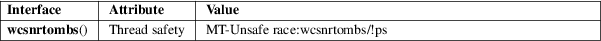

wcsnrtombs − convert a wide-character string to a multibyte string
Standard C library (libc, −lc)
#include <wchar.h>
size_t
wcsnrtombs(char dest[restrict
.len], const wchar_t **restrict
src,
size_t nwc, size_t len,
mbstate_t *restrict ps);
Feature Test Macro Requirements for glibc (see feature_test_macros(7)):
wcsnrtombs():
Since glibc 2.10:
_POSIX_C_SOURCE >= 200809L
Before glibc 2.10:
_GNU_SOURCE
The wcsnrtombs() function is like the wcsrtombs(3) function, except that the number of wide characters to be converted, starting at *src, is limited to nwc.
If dest is not NULL, the wcsnrtombs() function converts at most nwc wide characters from the wide-character string *src to a multibyte string starting at dest. At most len bytes are written to dest. The shift state *ps is updated. The conversion is effectively performed by repeatedly calling wcrtomb(dest, *src, ps), as long as this call succeeds, and then incrementing dest by the number of bytes written and *src by one. The conversion can stop for three reasons:
|
• |
A wide character has been encountered that can not be represented as a multibyte sequence (according to the current locale). In this case, *src is left pointing to the invalid wide character, (size_t) −1 is returned, and errno is set to EILSEQ. | ||
|
• |
nwc wide characters have been converted without encountering a null wide character (L'\0'), or the length limit forces a stop. In this case, *src is left pointing to the next wide character to be converted, and the number of bytes written to dest is returned. | ||
|
• |
The wide-character string has been completely converted, including the terminating null wide character (which has the side effect of bringing back *ps to the initial state). In this case, *src is set to NULL, and the number of bytes written to dest, excluding the terminating null byte ('\0'), is returned. |
If dest is NULL, len is ignored, and the conversion proceeds as above, except that the converted bytes are not written out to memory, and that no destination length limit exists.
In both of the above cases, if ps is NULL, a static anonymous state known only to the wcsnrtombs() function is used instead.
The programmer must ensure that there is room for at least len bytes at dest.
The wcsnrtombs() function returns the number of bytes that make up the converted part of multibyte sequence, not including the terminating null byte. If a wide character was encountered which could not be converted, (size_t) −1 is returned, and errno set to EILSEQ.
For an explanation of the terms used in this section, see attributes(7).

POSIX.1-2008.
The behavior of wcsnrtombs() depends on the LC_CTYPE category of the current locale.
Passing NULL as ps is not multithread safe.
iconv(3), mbsinit(3), wcsrtombs(3)